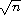

b
b(car (car (cdr '((a b) (c d)))))
c(car (cdr (car (cdr '((a b) (c d))))))
d
| a. | (+ (* 1.2 (- 2 1/3)) -8.7) |
| b. | (/ (+ 2/3 4/9) (- 5/11 4/3)) |
| c. | (+ 1 (/ 1 (+ 2 (/ 1 (+ 1 1/2))))) |
| d. | (* (* (* (* (* (* 1 -2) 3) -4) 5) -6) 7) or (* 1 -2 3 -4 5 -6 7) |
Exercise 2.2.2. (page 20)
See Section 6.4.
| a. | (car . cdr) |
| b. | (this (is silly)) |
| c. | (is this silly?) |
| d. | (+ 2 3) |
| e. | (+ 2 3) |
| f. | + |
| g. | (2 3) |
| h. | #<procedure> |
| i. | cons |
| j. | 'cons |
| k. | quote |
| l. | 5 |
| m. | 5 |
| n. | 5 |
| o. | 5 |
(car (cdr (car '((a b) (c d))))) b
(car (car (cdr '((a b) (c d))))) c
(car (cdr (car (cdr '((a b) (c d)))))) d
'((a . b) ((c) d) ())
(car '((a b) (c d))) (a b)
(car (car '((a b) (c d)))) a
(cdr (car '((a b) (c d)))) (b)
(car (cdr (car '((a b) (c d))))) b
(cdr (cdr (car '((a b) (c d))))) ()
(cdr '((a b) (c d))) ((c d))
(car (cdr '((a b) (c d)))) (c d)
(car (car (cdr '((a b) (c d))))) c
(cdr (car (cdr '((a b) (c d))))) (d)
(car (cdr (car (cdr '((a b) (c d)))))) d
(cdr (cdr (car (cdr '((a b) (c d)))))) ()
(cdr (cdr '((a b) (c d)))) ()
Exercise 2.2.8. (page 21)
See Section 2.3.
Other orders are possible. For example, the variable car could have been evaluated before its argument.
| a. | (let ([x (* 3 a)]) (+ (- x b) (+ x b))) |
| b. | (let ([x (list a b c)]) (cons (car x) (cdr x))) |
Exercise 2.4.2. (page 25)
The value is 54. The outer let binds x to 9, while the inner let binds x to 3 (9/3). The inner let evaluates to 6 (3 + 3), and the outer let evaluates to 54 (9 × 6).
| a. |
(let ([x0 'a] [y0 'b]) |
| b. |
(let ([x0 '((a b) c)]) |
| a. | a |
| b. | (a) |
| c. | a |
| d. | () |
Exercise 2.5.2. (page 30)
See page 31.
| a. | no free variables |
| b. | + |
| c. | f |
| d. | cons, f, and y |
| e. | cons and y |
| f. | cons, y, and z (y also appears as a bound variable) |
Exercise 2.6.1. (page 34)
The program would loop indefinitely.
(define compose
(lambda (p1 p2)
(lambda (x)
(p1 (p2 x)))))
(define cadr (compose car cdr))
(define cddr (compose cdr cdr))
(define caar (compose car car))
(define cadr (compose car cdr))
(define cdar (compose cdr car))
(define cddr (compose cdr cdr))
(define caaar (compose car caar))
(define caadr (compose car cadr))
(define cadar (compose car cdar))
(define caddr (compose car cddr))
(define cdaar (compose cdr caar))
(define cdadr (compose cdr cadr))
(define cddar (compose cdr cdar))
(define cdddr (compose cdr cddr))
(define caaaar (compose caar caar))
(define caaadr (compose caar cadr))
(define caadar (compose caar cdar))
(define caaddr (compose caar cddr))
(define cadaar (compose cadr caar))
(define cadadr (compose cadr cadr))
(define caddar (compose cadr cdar))
(define cadddr (compose cadr cddr))
(define cdaaar (compose cdar caar))
(define cdaadr (compose cdar cadr))
(define cdadar (compose cdar cdar))
(define cdaddr (compose cdar cddr))
(define cddaar (compose cddr caar))
(define cddadr (compose cddr cadr))
(define cdddar (compose cddr cdar))
(define cddddr (compose cddr cddr))
(define atom?
(lambda (x)
(not (pair? x))))
(define shorter
(lambda (ls1 ls2)
(if (< (length ls2) (length ls1))
ls2
ls1)))
Exercise 2.8.1. (page 46)
The structure of the output would be the mirror image of the structure of the input. For example, (a . b) would become (b . a) and ((a . b) . (c . d)) would become ((d . c) . (b . a)).
(define append
(lambda (ls1 ls2)
(if (null? ls1)
ls2
(cons (car ls1) (append (cdr ls1) ls2)))))
(define make-list
(lambda (n x)
(if (= n 0)
'()
(cons x (make-list (- n 1) x)))))
Exercise 2.8.4. (page 47)
See the description of list-ref on page 160 and the description of list-tail on page 160.
(define shorter?
(lambda (ls1 ls2)
(and (not (null? ls2))
(or (null? ls1)
(shorter? (cdr ls1) (cdr ls2))))))
(define shorter
(lambda (ls1 ls2)
(if (shorter? ls2 ls1)
ls2
ls1)))
(define even?
(lambda (x)
(or (= x 0)
(odd? (- x 1)))))
(define odd?
(lambda (x)
(and (not (= x 0))
(even? (- x 1)))))
(define transpose
(lambda (ls)
(cons (map car ls) (map cdr ls))))
(define make-counter
(lambda (init incr)
(let ([next init])
(lambda ()
(let ([v next])
(set! next (+ next incr))
v)))))
(define make-stack
(lambda ()
(let ([ls '()])
(lambda (msg . args)
(case msg
[(empty? mt?) (null? ls)]
[(push!) (set! ls (cons (car args) ls))]
[(top) (car ls)]
[(pop!) (set! ls (cdr ls))]
[else "oops"])))))
(define make-stack
(lambda ()
(let ([ls '()])
(lambda (msg . args)
(case msg
[(empty? mt?) (null? ls)]
[(push!) (set! ls (cons (car args) ls))]
[(top) (car ls)]
[(pop!) (set! ls (cdr ls))]
[(ref) (list-ref ls (car args))]
[(set!) (set-car! (list-tail ls (car args)) (cadr args))]
[else "oops"])))))
(define make-stack
(lambda (n)
(let ([v (make-vector n)] [i -1])
(lambda (msg . args)
(case msg
[(empty? mt?) (= i -1)]
[(push!)
(set! i (+ i 1))
(vector-set! v i (car args))]
[(top) (vector-ref v i)]
[(pop!) (set! i (- i 1))]
[(ref) (vector-ref v (- i (car args)))]
[(set!) (vector-set! v (- i (car args)) (cadr args))]
[else "oops"])))))
(define emptyq?
(lambda (q)
(eq? (car q) (cdr q))))
(define getq
(lambda (q)
(if (emptyq? q)
(assertion-violation 'getq "the queue is empty")
(car (car q)))))
(define delq!
(lambda (q)
(if (emptyq? q)
(assertion-violation 'delq! "the queue is empty")
(set-car! q (cdr (car q))))))
(define make-queue
(lambda ()
(cons '() '())))
(define putq!
(lambda (q v)
(let ([p (cons v '())])
(if (null? (car q))
(begin
(set-car! q p)
(set-cdr! q p))
(begin
(set-cdr! (cdr q) p)
(set-cdr! q p))))))
(define getq
(lambda (q)
(car (car q))))
(define delq!
(lambda (q)
(if (eq? (car q) (cdr q))
(begin
(set-car! q '())
(set-cdr! q '()))
(set-car! q (cdr (car q))))))
Exercise 2.9.7. (page 56)
When asked to print a cyclic structure, some implementations print a representation of the output that reflects its cyclic structure. Other implementations do not detect the cycle and produce either no output or an infinite stream of output. When length is passed a cyclic list, an exception is raised, likely with a message indicating that the list is not proper. The definition of length on page 42 will, however, simply loop indefinitely.
(define race
(lambda (hare tortoise)
(if (pair? hare)
(let ([hare (cdr hare)])
(if (pair? hare)
(and (not (eq? hare tortoise))
(race (cdr hare) (cdr tortoise)))
(null? hare)))
(null? hare))))
(define list?
(lambda (x)
(race x x)))
(let ([x (memv 'a ls)]) (and x (memv 'b x))) 
((lambda (x) (and x (memv 'b x))) (memv 'a ls))
((lambda (x) (if x (and (memv 'b x)) #f)) (memv 'a ls))
((lambda (x) (if x (memv 'b x) #f)) (memv 'a ls))
(or (memv x '(a b c)) (list x))
(let ((t (memv x '(a b c)))) (if t t (or (list x))))
((lambda (t) (if t t (or (list x)))) (memv x '(a b c)))
((lambda (t) (if t t (list x))) (memv x '(a b c)))
Exercise 3.1.3. (page 64)
See page 97.
(define-syntax when
(syntax-rules ()
[(_ e0 e1 e2 ...)
(if e0 (begin e1 e2 ...))]))
(define-syntax unless
(syntax-rules ()
[(_ e0 e1 e2 ...)
(when (not e0) e1 e2 ...)]))
Exercise 3.2.1. (page 72)
Tail-recursive: even? and odd?, race, fact in second definition of factorial, fib in second version of fibonacci. Nontail-recursive: sum, factorial, fib in first version of fibonacci. Both: factor.
(define factor
(lambda (n)
(letrec ([f (lambda (n i)
(cond
[(>= i n) (list n)]
[(integer? (/ n i))
(cons i (f (/ n i) i))]
[else (f n (+ i 1))]))])
(f n 2))))
Exercise 3.2.3. (page 72)
Yes, but we need two named let expressions, one for even? and one for odd?.
(let even? ([x 20])
(or (= x 0)
(let odd? ([x (- x 1)])
(and (not (= x 0))
(even? (- x 1))))))
(define fibcount1 0)
(define fibonacci1
(lambda (n)
(let fib ([i n])
(set! fibcount1 (+ fibcount1 1))
(cond
[(= i 0) 0]
[(= i 1) 1]
[else (+ (fib (- i 1)) (fib (- i 2)))]))))
(define fibcount2 0)
(define fibonacci2
(lambda (n)
(if (= n 0)
0
(let fib ([i n] [a1 1] [a2 0])
(set! fibcount2 (+ fibcount2 1))
(if (= i 1)
a1
(fib (- i 1) (+ a1 a2) a1))))))
The counts for (fibonacci 10) are 177 and 10, for (fibonacci 20) are 21891 and 20, and for (fibonacci 30) are 2692537 and 30. While the number of calls made by the second is directly proportional to the input, the number of calls made by the first grows rapidly (exponentially, in fact) as the input value increases.
Exercise 3.2.5. (page 73)
See page 312.
Exercise 3.2.6. (page 73)
A call in the last subexpression of an or expression in tail position would not be a tail call with the modified definition of or. For the even?/odd? example, the resulting definition of even? would no longer be tail-recursive and for very large inputs might exhaust available space.
The expansion performed by this definition is incorrect in another way, which has to do with multiple return values (Section 5.8): if the last subexpression returns multiple values, the or expression should return multiple values, but with the incorrect definition, each subexpression appears on the right-hand side of a let, which expects a single return value. The simpler and incorrect definition of and has the same problem.
Exercise 3.2.7. (page 73)
The first of the three versions of factor below directly addresses the identified problems by stopping at ">, avoiding the redundant division, and skipping the even factors after 2. Stopping at "> probably yields the biggest savings, followed by skipping even factors greater than 2. Avoiding the redundant division is less important, since it occurs only when a factor is found.
(define factor
(lambda (n)
(let f ([n n] [i 2] [step 1])
(if (> i (sqrt n))
(list n)
(let ([n/i (/ n i)])
(if (integer? n/i)
(cons i (f n/i i step))
(f n (+ i step) 2)))))))
The second version replaces (> i (sqrt n)) with (> (* i i) n), since * is typically much faster than sqrt.
(define factor
(lambda (n)
(let f ([n n] [i 2] [step 1])
(if (> (* i i) n)
(list n)
(let ([n/i (/ n i)])
(if (integer? n/i)
(cons i (f n/i i step))
(f n (+ i step) 2)))))))
The third version uses gcd (see page 179) to avoid most of the divisions, since gcd should be faster than /.
(define factor
(lambda (n)
(let f ([n n] [i 2] [step 1])
(if (> (* i i) n)
(list n)
(if (= (gcd n i) 1)
(f n (+ i step) 2)
(cons i (f (/ n i) i step)))))))
To see the difference these changes make, time each version of factor, including the original, in your Scheme system to see which performs better. Try a variety of inputs, including larger ones like (+ (expt 2 100) 1).
(let ([k.n (call/cc (lambda (k) (cons k 0)))])
(let ([k (car k.n)] [n (cdr k.n)])
(write n)
(newline)
(k (cons k (+ n 1)))))
Or with multiple values (see Section 5.8):
(call-with-values
(lambda () (call/cc (lambda (k) (values k 0))))
(lambda (k n)
(write n)
(newline)
(k k (+ n 1))))
(define product
(lambda (ls)
(if (null? ls)
1
(if (= (car ls) 0)
0
(let ([n (product (cdr ls))])
(if (= n 0) 0 (* n (car ls))))))))
Exercise 3.3.3. (page 77)
If one of the processes returns without calling pause, it returns to the call to pause that first caused it to run, or to the original call to start if it was the first process in the list. Here is a reimplementation of the system that allows a process to quit explicitly. If other processes are active, the lwp system continues to run. Otherwise, control returns to the continuation of the original call to start.
(define lwp-list '())
(define lwp
(lambda (thunk)
(set! lwp-list (append lwp-list (list thunk)))))
(define start
(lambda ()
(call/cc
(lambda (k)
(set! quit-k k)
(next)))))
(define next
(lambda ()
(let ([p (car lwp-list)])
(set! lwp-list (cdr lwp-list))
(p))))
(define pause
(lambda ()
(call/cc
(lambda (k)
(lwp (lambda () (k #f)))
(next)))))
(define quit
(lambda (v)
(if (null? lwp-list)
(quit-k v)
(next))))
(define lwp-queue (make-queue))
(define lwp
(lambda (thunk)
(putq! lwp-queue thunk)))
(define start
(lambda ()
(let ([p (getq lwp-queue)])
(delq! lwp-queue)
(p))))
(define pause
(lambda ()
(call/cc
(lambda (k)
(lwp (lambda () (k #f)))
(start)))))
(define reciprocal
(lambda (n success failure)
(if (= n 0)
(failure)
(success (/ 1 n)))))
(define retry #f)
(define factorial
(lambda (x)
(let f ([x x] [k (lambda (x) x)])
(if (= x 0)
(begin (set! retry k) (k 1))
(f (- x 1) (lambda (y) (k (* x y))))))))
(define map/k
(lambda (p ls k)
(if (null? ls)
(k '())
(p (car ls)
(lambda (x)
(map/k p (cdr ls)
(lambda (ls)
(k (cons x ls)))))))))
(define reciprocals
(lambda (ls)
(map/k (lambda (x k) (if (= x 0) "zero found" (k (/ 1 x))))
ls
(lambda (x) x))))
(define-syntax complain
(syntax-rules ()
[(_ ek msg expr) (ek (list msg expr))]))
(define calc
(lambda (expr)
(call/cc
(lambda (ek)
(define do-calc
(lambda (expr)
(cond
[(number? expr) expr]
[(and (list? expr) (= (length expr) 3))
(let ([op (car expr)] [args (cdr expr)])
(case op
[(add) (apply-op + args)]
[(sub) (apply-op - args)]
[(mul) (apply-op * args)]
[(div) (apply-op / args)]
[else (complain "invalid operator" op)]))]
[else (complain "invalid expression" expr)])))
(define apply-op
(lambda (op args)
(op (do-calc (car args)) (do-calc (cadr args)))))
(define complain
(lambda (msg expr)
(ek (list msg expr))))
(do-calc expr)))))
(define calc #f)
(let ()
(define do-calc
(lambda (expr)
(cond
[(number? expr) expr]
[(and (list? expr) (= (length expr) 3))
(let ([op (car expr)] [args (cdr expr)])
(case op
[(add) (apply-op + args)]
[(sub) (apply-op - args)]
[(mul) (apply-op * args)]
[(div) (apply-op / args)]
[else (complain "invalid operator" op)]))]
[else (complain "invalid expression" expr)])))
(define apply-op
(lambda (op args)
(op (do-calc (car args)) (do-calc (cadr args)))))
(define complain
(lambda (msg expr)
(assertion-violation 'calc msg expr)))
(set! calc
(lambda (expr)
(do-calc expr))))
Exercise 3.5.4. (page 85)
This adds sqrt, times (an alias for mul), and expt along with minus.
(let ()
(define do-calc
(lambda (ek expr)
(cond
[(number? expr) expr]
[(and (list? expr) (= (length expr) 2))
(let ([op (car expr)] [args (cdr expr)])
(case op
[(minus) (apply-op1 ek - args)]
[(sqrt) (apply-op1 ek sqrt args)]
[else (complain ek "invalid unary operator" op)]))]
[(and (list? expr) (= (length expr) 3))
(let ([op (car expr)] [args (cdr expr)])
(case op
[(add) (apply-op2 ek + args)]
[(sub) (apply-op2 ek - args)]
[(mul times) (apply-op2 ek * args)]
[(div) (apply-op2 ek / args)]
[(expt) (apply-op2 ek expt args)]
[else (complain ek "invalid binary operator" op)]))]
[else (complain ek "invalid expression" expr)])))
(define apply-op1
(lambda (ek op args)
(op (do-calc ek (car args)))))
(define apply-op2
(lambda (ek op args)
(op (do-calc ek (car args)) (do-calc ek (cadr args)))))
(define complain
(lambda (ek msg expr)
(ek (list msg expr))))
(set! calc
(lambda (expr)
(call/cc
(lambda (ek)
(do-calc ek expr))))))
Exercise 3.6.1. (page 87)
This version of gpa returns x when all of the input letter grades are x.
(define-syntax gpa
(syntax-rules ()
[(_ g1 g2 ...)
(let ([ls (map letter->number (remq 'x '(g1 g2 ...)))])
(if (null? ls)
'x
(/ (apply + ls) (length ls))))]))
Exercise 3.6.2. (page 87)
After defining $distribution and distribution within the library as follows:
(define $distribution
(lambda (ls)
(let loop ([ls ls] [a 0] [b 0] [c 0] [d 0] [f 0])
(if (null? ls)
(list (list a 'a) (list b 'b) (list c 'c)
(list d 'd) (list f 'f))
(case (car ls)
[(a) (loop (cdr ls) (+ a 1) b c d f)]
[(b) (loop (cdr ls) a (+ b 1) c d f)]
[(c) (loop (cdr ls) a b (+ c 1) d f)]
[(d) (loop (cdr ls) a b c (+ d 1) f)]
[(f) (loop (cdr ls) a b c d (+ f 1))]
; ignore x grades, per preceding exercise
[(x) (loop (cdr ls) a b c d f)]
[else (assertion-violation 'distribution
"unrecognized grade letter"
(car ls))])))))
(define-syntax distribution
(syntax-rules ()
[(_ g1 g2 ...)
($distribution '(g1 g2 ...))]))
modify the export line to add distribution (but not $distribution).
Exercise 3.6.3. (page 87)
After defining histogram as follows:
(define histogram
(lambda (port distr)
(for-each
(lambda (n g)
(put-datum port g)
(put-string port ": ")
(let loop ([n n])
(unless (= n 0)
(put-char port #\*)
(loop (- n 1))))
(put-string port "\n"))
(map car distr)
(map cadr distr))))
modify the export line to add histogram. The solution uses for-each, which is described on page 118
R. Kent Dybvig /
Copyright © 2009 The MIT Press. Electronically reproduced by permission.
Illustrations © 2009 Jean-Pierre Hébert
ISBN 978-0-262-51298-5 / LOC QA76.73.S34D93
to order this book / about this book